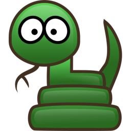

Alice could see, as well as if she were looking over their shoulders, that all the jurors were writing down 'stupid things!' on their slates, and she could even make out that one of them didn't know how to spell 'stupid,' and that he had to ask his neighbour to tell him. 'A nice muddle their slates'll be in before the trial's over!' thought Alice.

One of the jurors had a pencil that squeaked. This of course, Alice could not stand, and she went round the court and got behind him, and very soon found an opportunity of taking it away. She did it so quickly that the poor little juror (it was Bill, the Lizard) could not make out at all what had become of it; so, after hunting all about for it, he was obliged to write with one finger for the rest of the day; and this was of very little use, as it left no mark on the slate.
'Herald, read the accusation!' said the King.
On this the White Rabbit blew three blasts on the trumpet, and then unrolled the parchment scroll, and read as follows:—
'The Queen of Hearts, she made some tarts, All on a summer day: The Knave of Hearts, he stole those tarts, And took them quite away!'
'Consider your verdict,' the King said to the jury.
'Not yet, not yet!' the Rabbit hastily interrupted. 'There's a great deal to come before that!'
'Call the first witness,' said the King; and the White Rabbit blew three blasts on the trumpet, and called out, 'First witness!'
The first witness was the Hatter. He came in with a teacup in one hand and a piece of bread-and-butter in the other. 'I beg pardon, your Majesty,' he began, 'for bringing these in: but I hadn't quite finished my tea when I was sent for.'
'You ought to have finished,' said the King. 'When did you begin?'